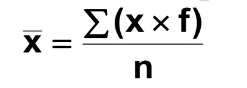

Basicamente o que se faz é multiplicar cada valor da variável pela sua respectiva freqüência, somar os resultados destes produtos e dividir esta soma pelo número de observações.
Em estatística, moda é uma das medidas de tendência central de um conjunto de dados, assim como a média e a mediana. Ela pode ser definida em moda amostral e populacional. Em relação à primeira delas, a moda amostral de um conjunto de dados trata do valor que ocorre com maior frequência ou o valor mais comum em um conjunto de dados.
Tabelas de frequência. A frequência absoluta, ou apenas frequência, de um valor é o número de vezes que uma determinada variável assume esse valor. Ao conjunto das frequências dos diferentes valores da variável dá-se o nome de distribuição da frequência (ou apenas distribuição).